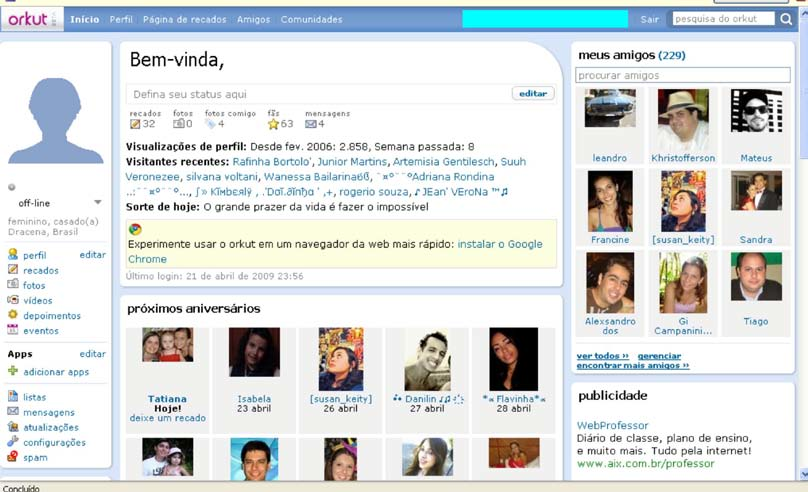
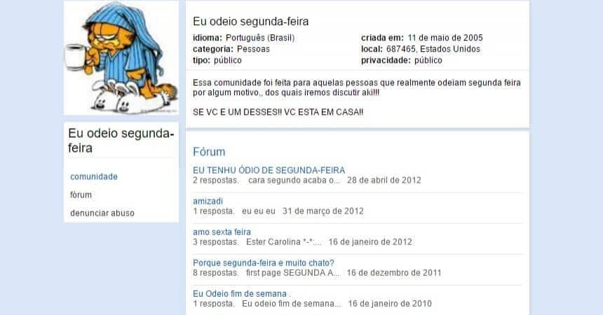
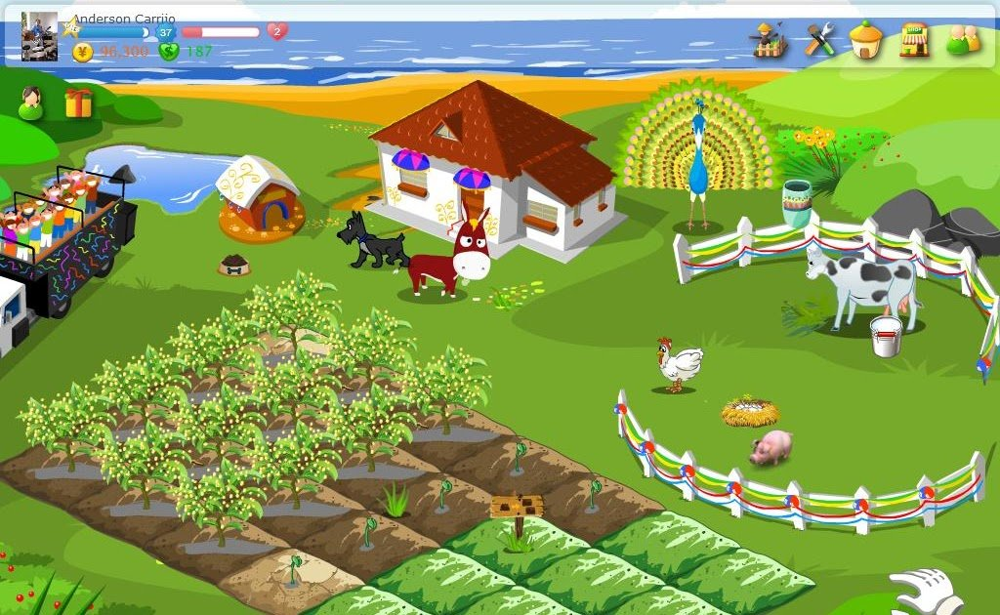

Bem vindo de volta ao Orkut ©
-
Com as mesmas ferramenteas de sempre, nós do orkut, reformulamos a rede para que vocês usuarios, possam ter de volta o acesso à melhor rede social de todos os tempos.

-
Essa é a nossa antiga pagina inicial, que todos sempre amaram, porem agora a refizemos de forma mais moderna.
De forma mais dinamica e de mais facil acesso para todos.
Sobre nossas comunidades

-
Que nossas comunidades eram as melhores todo mundo sabe, mas agora de forma mais interativa, ligando os usuarios ainda mais de acordo com os seus interesses, fazendo assim com que voce possa interagir, com alguem mais parecido com você, criando laços entre os usuarios.
Jogos

-
O melhor jogo do mundo vocês se lembram?
Ele está de volta, Colheita Feliz, o simulador de fazenda queridinho da galera, de uma forma mais moderna porem sem deixar para trás as caracteristicas classicas.